矿山机械
期末复习重点总结
教材：普通高等教育"十一五"国家级规划教材
主编：李炳文 万丽荣 柴光远
第一篇 采掘机械
第一章 煤岩截割理论
煤岩坚固性系数（普氏系数）是衡量煤岩破碎难易程度的重要指标，直接影响采掘机械的选型和工作效率。
煤岩的物理性质（与采掘机械密切相关）：
- 密度：单位体积煤岩在干燥状态下的质量，一般为 1.3~1.45 t/m³，计算取 1.35 t/m³
- 湿度（含水率）：含水率高→强度降低→功率消耗降低→粉尘减少
- 松散性：破碎后容积增大的性能，松散比=破碎后容积/破碎前容积
- 稳定性：暴露自由面后不致塌陷的性能
- 裂隙性：煤岩中的天然裂缝和节理，影响截割效果
煤岩的机械性质：
| 性质 | 定义 | 特点 |
|---|---|---|
| 强度 | 受外力开始破坏时的极限值 | 抗压>抗剪>抗拉；垂直层理>平行层理 |
| 硬度 | 抵抗尖锐工具侵入的性能 | 硬度越大，截割越困难 |
| 弹性 | 外力撤销后恢复原状的性能 | 弹性高→破碎困难 |
| 塑性 | 外力消失后不能恢复原状的性能 | 塑性高→消耗能量多 |
| 脆性 | 破碎时不带残余变形的性能 | 脆性高→容易破碎 |
f = σc / 10
σc—煤岩单轴抗压强度(MPa)
分类：f<1.5 软煤 | 1.5~3 中硬煤 | f>3 硬煤
截割阻抗 A（kN/m）：单位截割深度作用在刀具上的截割阻力
A = Z / h
Z—截割阻力平均值(kN)；h—截割深度(m)
经验公式：A ≈ 150f (kN/m)
煤层按截割阻抗分类：
- A < 180 kN/m → 软煤（适合刨煤机）
- A = 180~240 kN/m → 中硬煤（韧性煤用采煤机，脆性煤用滑行刨煤机）
- A > 240 kN/m → 硬煤（需大功率采煤机）
密实核理论（切削破岩机理）：
破碎过程：刀具切入→形成密实核→压强增大→裂纹扩展→块煤崩落→循环
约80%符合三角形载荷谱，截割阻力是随机载荷
Hw = ΣZ·l / G (kJ/kg 或 kWh/t)
ΣZ—截割阻力；l—截割长度；G—剥落煤量
当 l > 5~10 cm 时，Hw 趋于稳定（最小值区间）
影响截割比能耗的因素
- 煤岩性质：硬度越大，比能耗越高
- 截割深度：截深增大→比能耗降低（存在最优截深）
- 截齿形状：锥形截齿比扁形截齿比能耗低15%~20%
- 截割速度：速度过高→粉尘增多→比能耗增加
- 层理方向：沿层理截割比能耗较低
选择题测验
复习思考题
- 煤岩的机械性质有哪些？各性质对截割有何影响？
- 试用密实核理论解释截割过程中载荷的变化规律
- 截割阻抗的意义是什么？怎样测定？与坚固性系数有何关系？
- 截割比能耗的意义是什么？降低截割比能耗的途径有哪些？
第二章 掘进机械
掘进机械包括凿岩机、装载机械、掘进机三大类。重点掌握气动凿岩机的工作原理和掘进机的截割方式。
掘进设备分类：
- 钻眼爆破法 凿(钻)孔机械、装载机械、转载机械、支护设备
- 综合机械化 掘进机直接完成破落、装载、转运、支护等工序
一、气动凿岩机
工作原理（冲击式破岩）：
分类：
| 类型 | 特点 | 适用范围 |
|---|---|---|
| 手持式 | 功率小、机重轻 | 小直径浅孔 |
| 支腿式 | 减轻劳动强度 | 孔径24~42mm，孔深2~5m |
| 导轨式 | 冲击能大、钻孔速度快 | 孔深5~10m，孔径40~80mm |
配气机构（使活塞往复运动的关键部件）：
- 球阀：已很少使用
- 环状阀：配气机构动作原理与蝶状阀相似
- 蝶状阀：目前应用较多
工作原理：压缩空气进入气缸后腔→推动活塞前进→关闭排气孔→前腔压力升高→配气阀换位→压缩空气进入前腔→活塞返回→循环
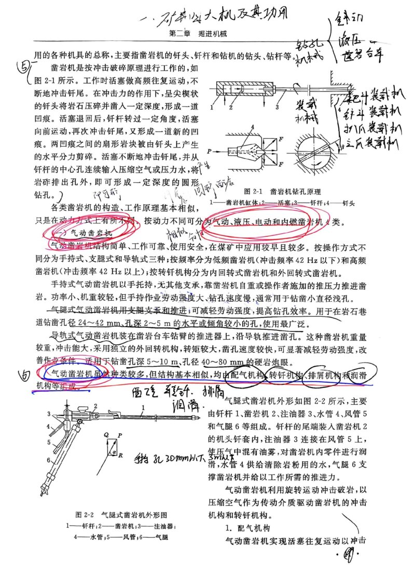
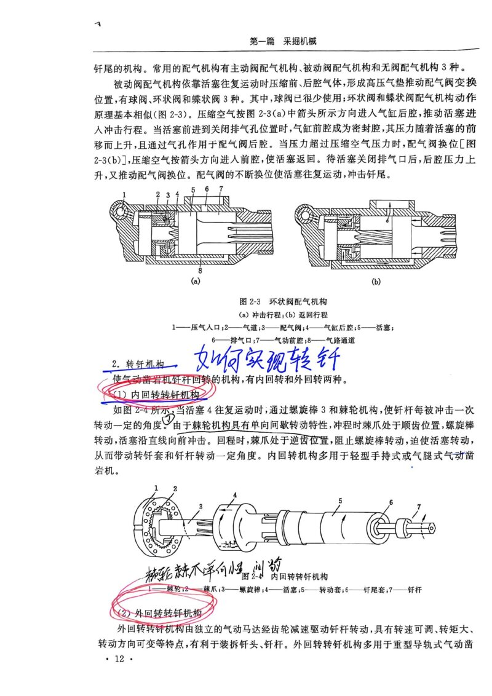
转钎机构（使钻杆旋转）：
| 类型 | 结构特点 | 适用范围 |
|---|---|---|
| 内回转 | 通过螺旋棒和棘轮机构，活塞往复运动使钻杆转动 | 轻型手持式或气腿式凿岩机 |
| 外回转 | 独立气动马达经齿轮减速驱动钻杆，转速可调、方向可变 | 重型导轨式凿岩机 |
冲洗机构：
用水冲洗排除孔内岩屑的机构。压力水经水针进入钻杆中心孔直通炮孔底，与少量气体一起排除岩屑。
强吹功能：在深孔和向下钻孔时，可把操纵手柄扳到强吹位置，使凿岩机停止冲击、停止注水，压缩空气实现"强吹"排屑。
润滑机构：
在进气管上安装注油器，压缩空气进入注油器后对润滑油施加压力，在高速气流作用下形成雾状，润滑各运动零件。
二、液压凿岩机
特点（与气动凿岩机相比）：
- 能量消耗少
- 凿岩速度快
- 效率高
- 一般安装在凿岩台车的钻臂上工作
适用范围：钻凿任何方位的炮孔，孔径30~65mm，适用于以钻爆法掘进的矿山井巷、硐室和隧道的钻孔作业。
分类：
- 按操作方式：支腿式、导轨式（导轨式应用最普遍）
- 按重量：轻型(<100kg)、中型(100~200kg)、重型(>200kg)
典型结构组成：
- 钻杆
- 转钎机构
- 配流阀冲击锤
- 供水机构
- 缓冲装置
- 液压马达
- 蓄能器
冲击机构分类：
| 分类依据 | 类型 | 特点 |
|---|---|---|
| 按配油结构 | 有阀式 | 技术成熟，应用广泛 |
| 无阀式 | 技术上尚未成熟 | |
| 有阀式按回油方式 | 单腔回油 | 套阀式、柱阀式 |
| 双腔回油 | 柱阀式 |
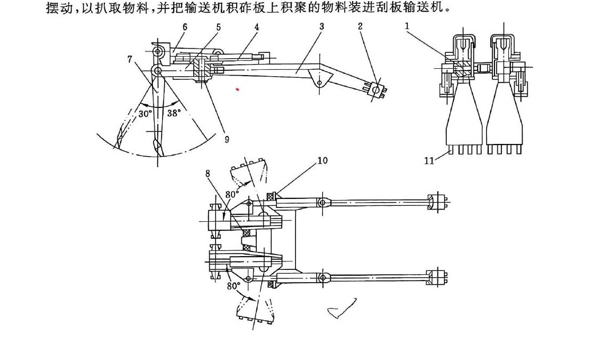
三、装载机械
装载机械类型：
| 类型 | 工作机构 | 特点 | 装载能力 |
|---|---|---|---|
| 耙斗装载机 | 耙斗 | 国内广泛使用，结构简单 | 30~100 m³/h |
| 铲斗装载机 | 铲斗 | 后卸式、侧卸式 | 较大 |
| 扒爪装载机 | 扒爪 | 连续装载 | 较大 |
| 立爪装载机 | 立爪 | 单立爪、双立爪 | 较大 |
| 扒爪立爪装载机 | 扒爪+立爪 | 立爪松料，扒爪装载 | 120~180 m³/h |
立爪装载机工作机构：
- 扒爪销轴、支座、动臂
- 小臂液压缸、小臂
- 扒取液压缸
- 立爪、橡胶缓冲、小臂销轴、爪齿
工作过程：立爪松动料堆→扒爪将物料扒入输送机
四、掘进机
悬臂式掘进机是考试重点，需掌握纵轴式和横轴式的区别、截割机构、工作方式。
掘进机分类：
| 分类依据 | 类型 | 适用范围 |
|---|---|---|
| 按所掘断面形状 | 全断面掘进机 | 直径2.5~10m，岩石单轴抗压强度50~350MPa的硬岩巷道 |
| 部分断面掘进机 | 单轴抗压强度<60MPa的煤、半煤岩、软岩水平巷道 | |
| 按驱动方式 | 电力驱动 | 各机构均为电动机驱动 |
| 电液驱动 | 部分机构采用液压驱动 |
掘进机发展趋势：
- 由单一到多能化
- 基本型到系列化（轻型、中型、重型）
- 较强的截割能力：截割功率132~200kW（中重型），超重>200kW
- 截割头转速20~50 r/min，截割速度1~2 m/s
- 采用现代控制技术（推进方向控制、断面尺寸控制、功率自动调节等）
- 掘锚联合机组（掘进+支护平行作业）
悬臂式掘进机总体结构：
- 截割机构：截割头、悬臂、回转座
- 装运机构：装载机构、中间输送机
- 行走机构：履带或轮式
- 液压系统：液压泵、液压马达、液压缸、控制阀组
- 电控系统：供电、照明、故障显示、瓦斯报警
- 喷雾降尘系统：内喷雾、外喷雾

纵轴式掘进机
- 截割头轴线与悬臂轴线重合
- 截割头为截锥体
- 掏槽深度=截割头长度
- 截齿运动轨迹近似平面摆线
- 破碎的煤岩向两侧堆积
- 产尘量较少
- 易切出光滑轮廓
- 便于开水沟和挖柱窝
横轴式掘进机
- 截割头轴线与悬臂轴线垂直
- 截割头近似半椭球
- 掏槽深度=截割头直径的2/3
- 截齿运动轨迹近似空间螺旋线
- 煤岩被推到铲装板上
- 产尘量较多
- 不易切出光滑轮廓
- 装载效率较高
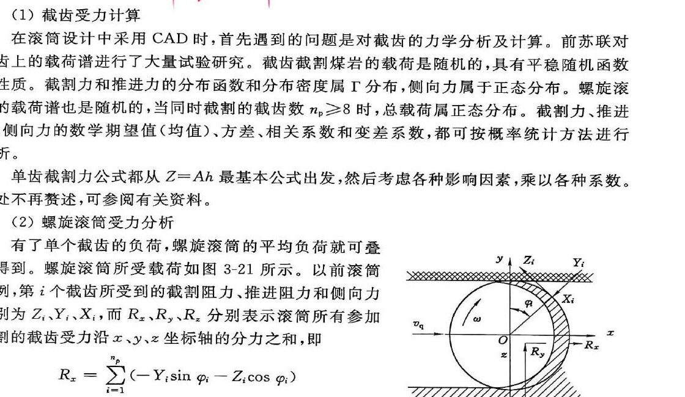
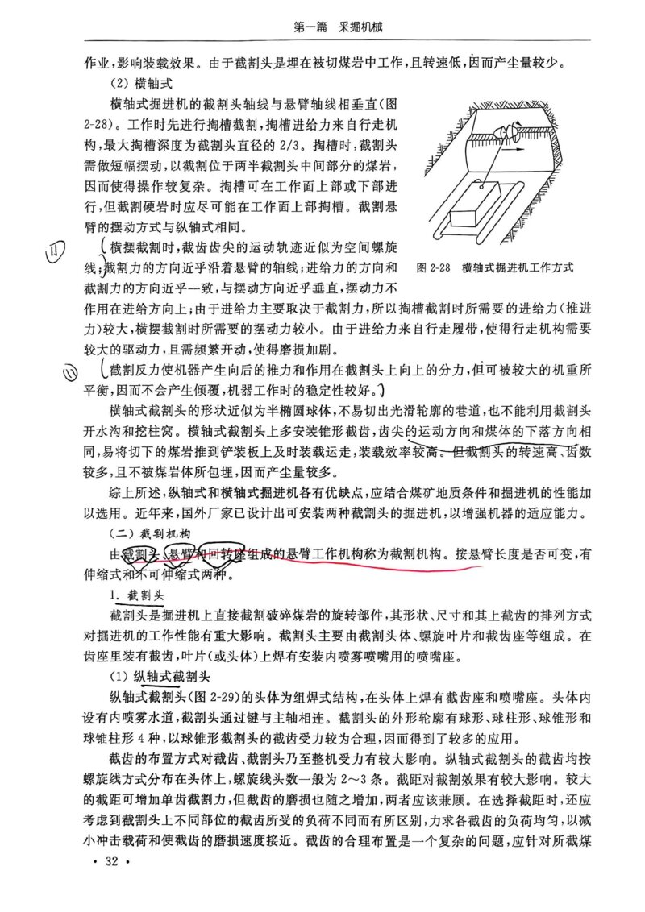
截割头结构：
- 头体：组焊式结构，焊有齿座和喷嘴座
- 螺旋叶片：2~3条螺旋线
- 截齿：扁形或锥形
- 内喷雾水道：设在头体内
截齿布置原则：
- 截割载荷均匀
- 比能耗低
- 有利于装煤
- 机器运行稳定
截距选择：
较大的截距→单齿截割力增加→截齿磨损增加
最佳截距公式：
- 当 h≥10mm 时：topt = K(1.25+h+1.2)
- 当 h<10mm 时：topt = K(某公式)
锥形截齿的最佳截距比扁形截齿减少15%~20%
纵轴式：截割反力与悬臂轴线垂直→产生倾覆力矩
横轴式：截割力沿悬臂轴线方向→机器稳定性好
机械化作业线形式：
- 以耙斗装载机为主：支腿式气动凿岩机+耙斗装载机+锚杆安装机（国内广泛使用）
- 以凿岩台车为主：适用于大断面巷道，效率高
- 以钻装机为主：钻孔、装载一体化
选择题测验
复习思考题
- 气动凿岩机的工作原理是什么？配气机构的作用？
- 内回转和外回转转钎机构有何区别？
- 液压凿岩机与气动凿岩机相比有何优缺点？
- 纵轴式和横轴式掘进机各有何特点？
- 截割头截齿布置的原则是什么？
- 掘进机的发展趋势有哪些？
第三章 采煤机械
采煤机械重点掌握滚筒采煤机的组成、截割部传动、滚筒结构、牵引方式。电牵引采煤机是现代主流机型。
采煤机械类型：
| 类型 | 适用条件 | 特点 |
|---|---|---|
| 滚筒采煤机 | 各种煤层 | 适应复杂地质条件，调高范围大，应用最广 |
| 刨煤机 | 薄煤层，煤质松软 | 顶底板条件好时优先采用 |
| 连续采煤机 | 房柱式开采 | 采高0.8~6.0m，主要在美、南非、印使用 |
对采煤机械的要求：
- 生产率应满足工作面产量要求
- 充分利用煤壁的压张效应，能耗低、块煤率高、煤尘少
- 能实现无级调速和自动调速
- 所有电气设备应具有防爆性能
- 应有可靠的防滑和制动装置、喷雾降尘装置
- 采用模块化设计和积木式组合
- 具有足够的强度和高可靠性
一、机械化采煤工作面
机械化采煤工作面配套设备：
- 双（或单）滚筒采煤机
- 刮板输送机
- 支护设备
分类：
| 类型 | 支护设备 | 特点 |
|---|---|---|
| 普采（高档普采） | 单体液压支柱 | 效率较低 |
| 综采 | 液压支架 | 高效、安全，是今后发展方向 |

采煤机工作方式：
- 单滚筒采煤机：需人工开切口（上切口约10m，下切口约7~8m）
- 双滚筒采煤机：可自开切口，实现双向采煤
骑溜槽式：前滚筒贴着顶板截割，后滚筒贴着底板截割
中底板式：前滚筒贴底板截割，后滚筒贴顶板截割
进刀方式：
| 方式 | 特点 | 适用条件 |
|---|---|---|
| 端部斜切进刀 | 需人工开切口 | 工作面较长 |
| 中部斜切进刀 | 工序简单、节省时间、装煤效果好；输送机一半时间呈直线 | 工作面较短、片帮严重 |
| 钻入法（正切） | 滚筒钻入煤壁，效率高 | 很少使用 |
二、采煤机发展概况
国外发展：
固定滚筒
单摇臂可调高
双摇臂(自开切口)
无链/电牵引
国内发展：
- 1964年：第一台MLQ-64型钢丝绳牵引单滚筒采煤机
- 传动方式：机械传动→液压传动(MXA-300/4.5WR)→电气传动(MG900/2210-WD)
- 目前产品：截高1~6m，煤层倾角0°~55°，装机功率100~2500kW
- 供电电压：660~3300V
三、滚筒采煤机组成
总体组成：
- 截割部：截割电动机、摇臂减速箱、滚筒、冷却系统、内喷雾系统
- 行走部（牵引部）：牵引机构、行走驱动装置
- 电动机：防爆型
- 辅助装置：机身连接、冷却喷雾、拖缆装置、调高装置、破碎机构、底托架
截割部耗能占采煤机装机总功率的80%~90%
截割部传动方式：
| 方式 | 传动路线 | 特点 | 应用机型 |
|---|---|---|---|
| 方式1 | 电动机→摇臂减速箱→行星齿轮减速箱→滚筒 | 结构简单 | MG500/1130-WD |
| 方式2 | 电动机→固定减速箱→摇臂减速箱→滚筒 | 传动简单，强度刚度好，但摇臂下降位置受限 | DY-150、BM-100 |
| 方式3 | 电动机→固定减速箱→摇臂减速箱→行星齿轮减速箱→滚筒 | 调高范围大，可获得较大下切深度 | AM-500、MXA-300 |
| 方式4 | 电动机→摇臂减速箱→滚筒 | 取消固定减速箱，机身短，利于自开切口 | 新型采煤机 |
截割部传动系统一般采用3~4级齿轮减速，传动比为30~50，滚筒转速一般为20~50 r/min。
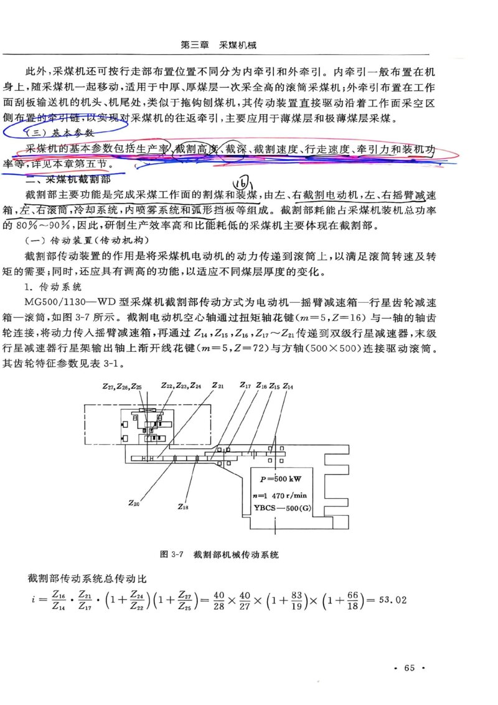
摇臂结构：
- 由壳体、一轴、二轴、中心齿轮组、第一级与第二级惰轮组、行星减速器、方轴、中心水路、齿轮离合器等组成
- 摇臂机械强度高，安全系数大
- 回转采用铰销结构，没有机械传动
- 摇臂减速箱机械传动都是简单的直齿轮传动
四、滚筒设计
滚筒结构组成：
- 截齿
- 齿座
- 螺旋叶片
- 端盘
- 喷嘴座
截齿配置：
| 配置方式 | 切削断面 | 块度 | 侧向载荷 | 比能耗 |
|---|---|---|---|---|
| 棋盘式 | 近似正六边形 | 大 | 平衡 | 低（优越性明显） |
| 顺序式 | 细长形 | 小 | 不平衡较大 | 较高 |
JOY公司的电牵引采煤机都采用棋盘式配置
截齿总数不少于17~24 h（h为螺旋头数），载荷波动允许
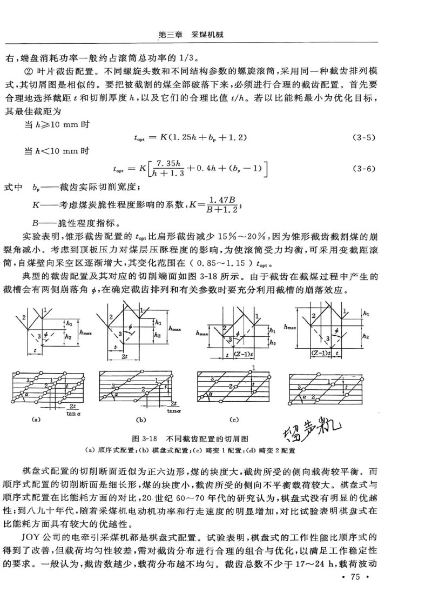
当 h≥10mm 时：topt = K(1.25+h+1.2)
当 h<10mm 时：topt = K(某公式)
K—考虑煤炭脆性程度影响的系数；h—截割深度
锥形截齿的最佳截距比扁形截齿减少15%~20%
端盘截齿配置原则：
- 端盘截齿处在滚筒中最恶劣的工作位置，数量要多些
- 排列应保证各截齿受力尽量均衡
- 圆周方向上的间距要尽量均衡
- 端盘截线数一般为6条左右
- 最边缘截线上截齿安装角为53°~55°
滚筒转向：
- 单滚筒采煤机：左工作面用右螺旋滚筒，右工作面用左螺旋滚筒
- 双滚筒采煤机：两个滚筒转向相反
| 方式 | 特点 | 应用 |
|---|---|---|
| 反向对滚 | 前滚筒顺转→煤尘少，碎煤不易抛出伤人 | 中厚煤层双滚筒采煤机 |
| 正向对滚 | 前滚筒产生煤尘多，但装煤口尺寸大 | 薄煤层采煤机 |
滚筒受力分析：
截齿截割煤岩的载荷是随机的，具有平稳随机函数的性质：
- 截割力和推进力的分布函数属于Γ分布
- 侧向力属于正态分布
- 当同时截割的截齿数超过8时，总载荷属正态分布
变差系数：衡量载荷波动性，允许值≤0.05
五、采煤机行走部（牵引部）
行走部基本要求：
- 牵引力大：目前牵引力已达1000kN，最大超过2000kN
- 传动比大：总传动比高达300左右
- 能实现无级调速：适应载荷变化
- 不受滚筒转向的影响
- 能实现正、反向行走和停止
- 有完善可靠的安全保护
- 操作方便：手动操作、远程操作
牵引方式分类：
| 类型 | 特点 | 现状 |
|---|---|---|
| 钢丝绳牵引 | 牵引力小，易断绳 | 已淘汰 |
| 链牵引 | 仍在一些老式采煤机使用 | 逐渐减少 |
| 无链牵引 | 安全可靠，适应性强 | 现代采煤机广泛采用 |
无链牵引优点：
- 消除了断链和跳链伤人事故，操作安全可靠
- 同一工作面内可以同时使用两台或多台采煤机
- 行走速度的脉动比链牵引小得多
- 取消了牵引链的张紧装置，使工作面布置缩短
- 对底板起伏、工作面弯曲、煤层不规则的适应性增强
无链牵引机构类型：
| 类型 | 结构特点 | 应用 |
|---|---|---|
| 销轨式 | 齿轮-销轨式、链轮-销轨式 | MG500/1130-WD |
| 齿轨式 | 销轮-齿轨式、齿轮-齿轨式 | 大牵引力采煤机 |
销轨式行走传动原理与齿条相同，都属于齿轨式行走。
齿轨的模数很大，一般为40~60mm。
为保证齿轨轮与销轨的良好啮合，要求输送机尽可能平直铺设：
- 相邻两节中部槽在水平面弯曲不得超过±1.5°
- 垂直面弯曲不得超过±3°
- 弯曲段不得小于12~15m距离
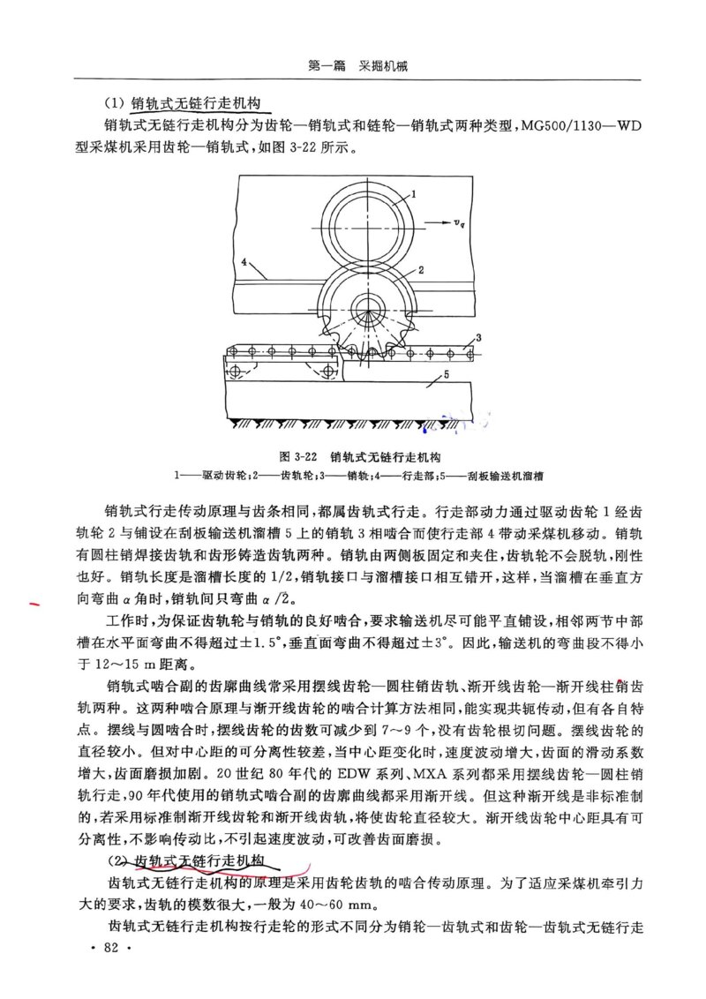
牵引部传动方式：
| 类型 | 特点 | 应用 |
|---|---|---|
| 机械牵引 | 工作可靠，但只能有级调速，结构复杂 | 已不采用 |
| 液压牵引 | 无级调速，换向停止容易，但制造精度高，效率低，油液易泄露 | 曾广泛应用 |
| 电牵引 | 效率高，可靠性好，调速性能好 | 现代主流 |
液压牵引传动系统：
一般采用变量泵-定量马达容积调速系统。
| 马达类型 | 转速范围 | 特点 | 应用机型 |
|---|---|---|---|
| 高速马达 | 1500~2000 r/min | 需经较大机械传动比 | MAX-300、MG200-W |
| 中速马达 | 160~320 r/min | 行星转子式摆线马达 | AM-500 |
| 低速马达 | 0~40 r/min | 径向多作用柱塞式 | DY-150、MD-200 |
电牵引调速原理：
直流电动机调速：
n = (U - IaRa) / (CeΦ)
- 保持磁通Φ不变，改变电枢电压U→恒转矩调速
- 保持电枢电压U不变，减小磁通Φ→恒功率调速
交流电动机变频调速：
n = 60f / p
f—定子电源频率(Hz)；p—电动机磁极对数
调压调频(VVVF)是交流电动机变频调速控制的基本原理。
采用交-直-交变频器：二极管整流→SPWM正交脉宽调制逆变器
电牵引四象限运行：
采煤机电牵引必须满足四象限运行，尤其在大倾角工作面运行时：
- 停机或向上截割牵引时，采煤机可能超同步发电运行
- 直流电牵引易实现四象限运行、反馈制动
- 交流电牵引：倾角不大时采用能耗制动（制动转矩可达额定转矩的20%左右）
- 大倾角工作面采用发电制动，电能反馈电网
六、辅助装置
机身连接：
采用无底托架总体结构，主要由平滑块及其支撑架、液压拉杆、高强度螺栓、调高液压缸、铰接摇臂的左右连接架等组成。
左右行走部在四条液压拉杆和多组高强度螺栓的预紧力作用下，将采煤机三段机身联为一个刚性整体。
冷却喷雾系统：
高压水冷式三相交流电动机，主电路有可靠的过载、漏电和短路保护。
冷却系统分为六路：
- 第一、二路：左右摇臂内喷雾及减速箱水冷却→外喷雾
- 第三路：左牵引电动机和泵电动机冷却→左截割电动机冷却
- 第四路：变压器箱和右牵引电动机冷却→右截割电动机冷却
- 第五路：泵箱冷却器→外喷雾
- 第六路：变频器箱冷却
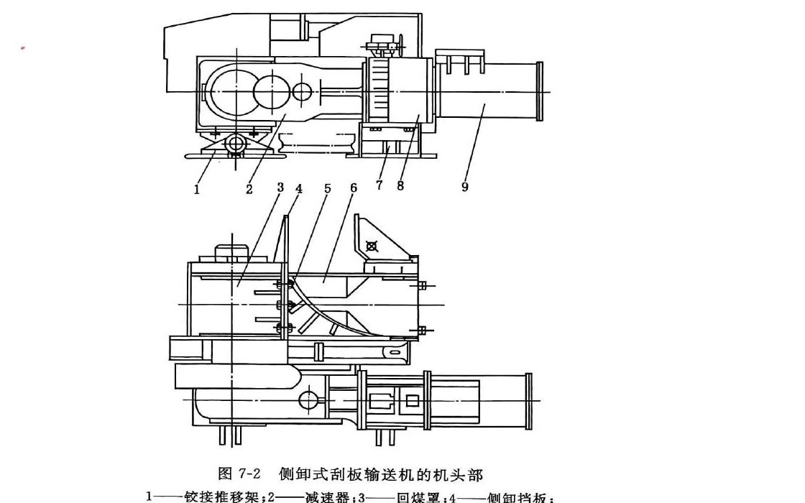
拖缆装置：
夹板链式拖缆装置，用螺栓将拖缆架固定在采煤机中部连接框架的上平面。
从采面端头到中点的一段电缆和水管固定铺设在输送机电缆槽内，装在电缆夹板链中。
调高装置：
调高液压系统包括调高、制动和控制回路三部分。
工作时电动机驱动调高双联齿轮泵（大泵25mL/r，小泵10mL/r），高压油经多路换向阀、调高电磁阀和平衡阀分别进入左右摇臂调高液压缸，实现滚筒升降。
当电磁阀处于中位时，靠平衡阀将调高液压缸锁定在调定的高度
破碎机构：
安装在迎着煤流的机身端部，用于破碎将要进入机身下的大块煤。
驱动方式：截割部减速箱带动或专用电动机传动。
破碎滚筒由小破碎齿、大破碎齿、滚筒体和端盘组成，大、小破碎刀盘间隔交错安装。
七、采煤机选型
"三机"配套：
采煤机、输送机和液压支架必须合理配套，否则高产高效难以实现。
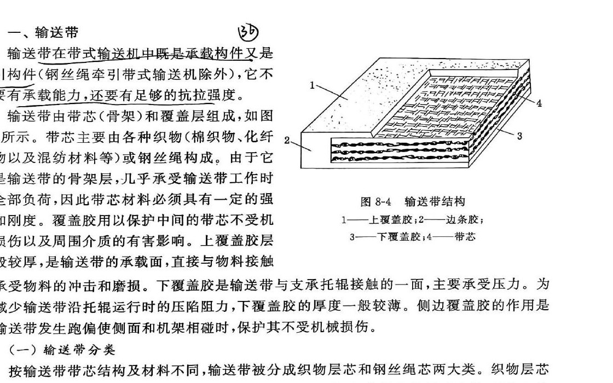
B = b + e + B输 + x + D柱/2
b—截深；e—煤壁与铲煤板间隙(100~150mm)；B输—输送机宽度；x—支架前柱与输送机距离(150~200mm)；D柱—立柱外径
选型要求：
- 人行道宽度K一般应大于700mm
- 薄煤层中人行道高度应大于400mm
- 过煤高度h≥250~300mm（薄煤层允许h≥200~240mm）
- 过机高度H一般应大于200mm
- 梁端距C=250~350mm（薄煤层取小值）
- 推移液压缸行程应较截深大100~200mm
根据煤的坚硬度选型：
- 采煤机适于开采坚固性系数f<4的缓倾斜及急倾斜煤层
- f=1.8~2.5的中硬煤层：可采用中等功率采煤机
- f=2.5~4的中硬以上煤层：应采用大功率采煤机
根据煤层厚度选型：
| 煤层类型 | 厚度范围 | 采煤机类型 |
|---|---|---|
| 极薄煤层 | <0.8m | 疏底板式采煤机 |
| 薄煤层 | 0.8~1.3m | 骑溜槽式采煤机 |
| 中厚煤层 | 1.3~3.5m | 中等功率或大功率采煤机 |
| 厚煤层 | >3.5m | 大采高综采设备，需调斜功能和大块煤破碎装置 |
选择题测验
复习思考题
- 采煤机械的类型及适用条件？
- 滚筒采煤机由哪几部分组成？各部分功能？
- 截齿配置的原则是什么？棋盘式与顺序式有何区别？
- 采煤机的进刀方式有哪些？各有何特点？
- 采煤机行走部的基本要求是什么？
- 无链牵引机构有何优点？类型有哪些？
- 电牵引采煤机的调速原理是什么？
- 什么是"三机"配套？配套尺寸有哪些要求？
第二篇 支护设备
第四章 单体支护设备
单体液压支柱重点掌握外注式活塞式的工作原理、三用阀的功能、悬浮式支柱的特点。
单体支护设备发展：
| 类型 | 特点 | 现状 |
|---|---|---|
| 木支柱 | 古老支护材料，安全性差，复用率低 | 除地方小煤矿外一般不再使用 |
| 金属摩擦支柱 | 结构简单，重量轻，造价低 | 支撑力受温度湿度影响大，使用量逐步减少 |
| 单体液压支柱 | 承受载荷均匀，初撑力大，支设效率高 | 主要应用于中厚煤层及薄煤层工作面 |
单体液压支柱类型：
- 外注式 活塞式、悬浮式（单伸缩、双伸缩）
- 内注式 整体式、分体式
外注式活塞式单体液压支柱工作原理：
注液枪供液
安全阀控制
打开卸载阀
三用阀功能：
- 单向阀：升柱时供液
- 安全阀：恒阻控制，防止过载
- 卸载阀：降柱时泄液
悬浮式单体液压支柱特点（新型）：
- 采用液压悬浮技术原理，悬浮力直接通过活柱内腔作用在顶盖上
- 无焊缝、无柱头、无活塞结构
- 工作行程大，使用范围广
- 抗偏载能力强，使用安全可靠
- 重量比国内现有支柱减轻20%~30%
P0 = (π/4)·D²·p泵·m·cosα × 10⁻³ (kN)
D—立柱缸径；p泵—泵站工作压力；m—立柱数；α—倾斜角
选择题测验
复习思考题
- 单体液压支柱的类型有哪些？
- 外注式活塞式单体液压支柱的工作原理？
- 三用阀的功能是什么？
- 悬浮式支柱有何特点？
第五章 液压支架
液压支架是综采工作面的核心设备。重点掌握三种基本架型的对比、四连杆机构的作用、支架参数计算。
液压支架分类：
| 分类依据 | 类型 |
|---|---|
| 按支护方式 | 支撑式、掩护式、支撑掩护式 |
| 按采高 | 薄煤层支架、中厚煤层支架、大采高支架 |
| 按位置 | 工作面支架、过渡支架、端头支架 |
| 按采煤方法 | 一次采全高、放顶煤、铺网、充填支架 |
| 按控制方式 | 本架控制、邻架控制、成组控制 |

三种基本架型对比：
支撑式支架
- 立柱直接支撑顶梁
- 支撑力大，切顶性能好
- 抗水平载荷能力差
- 护矸性能差
- 适用：缓倾斜、顶板稳定
掩护式支架
- 单排立柱+掩护梁
- 支撑力较小，切顶性差
- 承受水平推力大
- 挡矸性能好
- 适用：顶板不稳定、周期来压不强烈
支撑掩护式支架
- 兼有支撑式和掩护式特征
- 两排立柱，顶梁长
- 支撑力大，切顶能力强
- 挡矸性能好，能承受较大水平推力
- 适用：顶板中等以上稳定，周期来压强烈
掩护式支架细分
支顶掩护式：立柱只支撑顶梁，不支撑掩护梁
支顶支掩支撑掩护式：
- 前排立柱支撑顶梁，后排立柱支撑掩护梁
- 前排立柱向前倾，后排立柱向后倾
- 工作阻力多小于前排
- 顶梁与底座较短，结构紧凑，整体刚性好
- 底座前端比压小，便于移架，更适用于较软底板


液压支架工作原理：


支架工作特性（阻力-时间特性）：
- 初撑增阻阶段：升柱至单向阀关闭，初撑力建立
- 增阻阶段：顶板下沉→液体压力升高→弹性压缩
- 恒阻阶段：安全阀开启→泄液→工作阻力恒定
三个重要元件：安全阀、液控单向阀、立柱
四连杆机构
组成：掩护梁与底座之间用连杆连接形成四连杆机构
作用：
- 支架升降时，借助四连杆机构可使支架顶梁前端点的运动轨迹近似双纽线
- 使支架顶梁前端点与煤壁间距离的变化大大减少，提高了管理顶板的性能
- 使支架能承受较大的水平力
结构类型：
- 前、后连杆都为单杆式
- 后连杆为整体铸钢件或焊接件，前连杆为左右分置的单杆
液压支架的纵向稳定性完全是由四连杆机构决定的，而不取决于立柱的多少
为保持支架梁端距的稳定，一般应控制梁端摆动幅度为30~80mm。
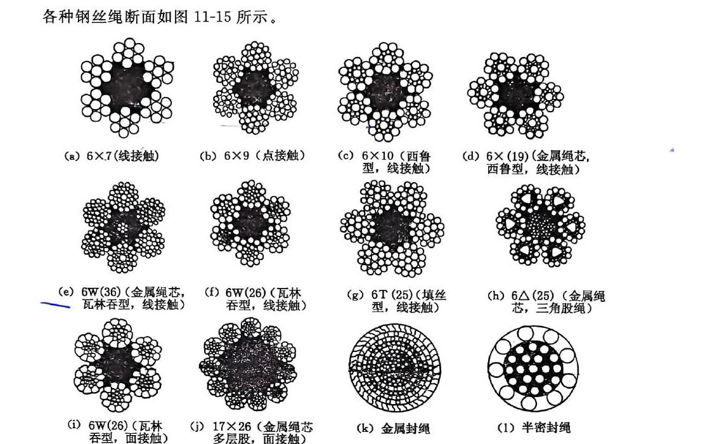
围岩关系：
| 岩层 | 位置 | 特点 |
|---|---|---|
| 伪顶 | 紧贴煤层上面 | 厚0.2~0.4m，随即脱落 |
| 直接顶 | 伪顶或煤层上面 | 厚几米~十几米，回柱后较快垮落 |
| 基本顶 | 直接顶上面 | 较厚且坚硬，推进一定距离后垮落 |
初次垮落步距：从开切眼到工作面初次切顶线的距离
液压支架的选用
选型考虑因素：
| 因素 | 选型建议 |
|---|---|
| 煤层厚度 |
|
| 煤层倾角 |
|
| 底板强度 |
|
| 瓦斯含量 | 涌出量大时：选用通风断面较大的支撑式或支撑掩护式支架 |
综采工作面支架选型原则：
- 对于不稳定和中等稳定顶板：优先选用二柱掩护式支架
- 对于非常稳定和稳定的难垮落顶板：优先考虑四柱支撑掩护式支架
- 二柱式支架对顶板的实际支撑力高于同样名义额定阻力的四柱式支架
- 在不稳定顶板条件下使用四柱式支架应注意对机道上方的顶板控制
液压支架结构
组成：
- 承载结构件：顶梁、掩护梁、底座、连杆、护帮板等
- 执行元件：立柱、各类千斤顶
- 控制元件：操纵阀、单向阀、安全阀等
- 辅助装置：调架装置、护帮装置、伸缩梁、活动侧护板、防倒防滑装置、喷雾装置等
顶梁形式：
| 形式 | 特点 | 适用 |
|---|---|---|
| 整体顶梁 | 结构简单，承载能力好，前端支撑力大，可设置全长侧护板 | 平整的顶板 |
| 铰接式顶梁 | 前梁可上下摆动，适应顶板起伏变化 | 起伏不平的顶板 |
| 组合式顶梁 | 主梁+前梁+伸缩梁，控顶距小 | 需要超前支护的顶板 |
伸缩梁：
一般是为了实现超前支护而设置的，伸缩值一般为600~800mm。
| 类型 | 特点 |
|---|---|
| 内伸式（潜入式） | 结构可靠性好，但接顶效果较差 |
| 外伸式（手套式） | 接顶效果好，但结构可靠性较差，易变形 |
立柱：
| 分类 | 类型 |
|---|---|
| 按伸缩方式 | 单伸缩、双伸缩 |
| 按结构 | 柱式、活塞式 |
双伸缩立柱：由外活柱和内活柱组成，伸缩比大，但一级缸有时会出现鼓胀现象。
在使用条件允许的情况下，尽量选用单伸缩带机械加长杆的立柱。
液压支架参数计算
Hmax = Mmax + S1 + S2
Hmin = Mmin - S1 - S2
Mmax、Mmin—煤层最大、最小截割高度；S1—伪顶冒落厚度(200~400mm)；S2—周期来压下沉量(300~900mm)
伸缩比：
支架的最大结构高度与最小结构高度之比称为伸缩比。
- 单伸缩立柱：伸缩比为1.6左右
- 双伸缩立柱或带机械加长杆：伸缩比可进一步提高
- 薄煤层支架：伸缩比可达3
q = K·M·ρ0 × 10⁻³ (MPa)
K—作用于支架上的顶板岩石厚度系数(5~8)；M—截割高度(m)；ρ0—岩石密度(2.5×10³ kg/m³)
R = q·F × 10³ (kN)
F = (L + C)·B + h (m²)
F—支架支护面积；L—顶梁长度；C—梁端距；B—顶梁宽度；h—架间距
其他参数：
- 底座宽度：一般为1.1~1.2m，厚煤层可加大到1.3m左右
- 支架中心距：大部分采用1.5m，大采高支架可采用1.75m，轻型支架可采用1.25m
- 初撑力：一般取(0.6~0.8)倍的工作阻力
- 移架力：薄煤层100~150kN；中厚煤层150~300kN；厚煤层300~400kN
- 推溜力：一般为100~150kN
液压控制系统
组成：泵站、供回液管路、控制元件（操纵阀、液控单向阀、安全阀等）
控制方式：
| 分类 | 类型 |
|---|---|
| 按操纵阀位置 | 本架控制、邻架控制 |
| 按控制原理 | 全流量控制、先导控制 |
| 按机械化程度 | 手动控制、电液自动控制 |
电液控制系统：利用微型计算机系统控制电液先导阀，再由先导阀驱动主控阀，实现工作面液压支架各动作的自动控制。
复习思考题
- 液压支架的类型及适用条件？
- 说明液压支架的工作原理及工作特性
- 支撑式、掩护式、支撑掩护式支架各有何特点？
- 什么是初次来压、周期来压？
- 四连杆机构的作用是什么？
- 液压支架选型时考虑哪些因素？
- 支架参数如何计算？
第三篇 矿井运输提升设备
第七章 刮板输送机
刮板输送机是综采工作面的关键设备，重点掌握组成、工作原理、类型、刮板链规格。
刮板输送机组成：
- 机头部：机头架、电动机、液力耦合器、减速器、链轮组件
- 机尾部
- 中间部：中部溜槽、过渡溜槽、刮板链组件
- 附属装置：紧链器、铲煤板、移溜板、电缆架

工作原理：
绕过机头链轮和机尾链轮的无极循环刮板链作为牵引机构，以溜槽作为承载机构，电动机经液力耦合器、减速器驱动链轮旋转，带动刮板链连续运转，将装在溜槽上的货载由机尾运到机头处卸载。
刮板输送机类型：
| 分类 | 类型 |
|---|---|
| 按溜槽布置 | 重叠式和并列式 |
| 按刮板链类型 | 中单链型、边双链型、中双链型 |
| 按功率 | 轻型(P≤75kW)、中型(75 |
刮板输送机特点：
- 运输能力不受负载块度和湿度的影响
- 机身矮、结构紧凑，可任意弯曲
- 可作采煤机轨道和拉移液压支架的支点
- 机身结构强度高，可用于爆破采煤工作面
- 缺点：运行阻力大，磨损严重，运输距离受限
刮板链：
圆环链规格：φ10×40、φ14×50、φ18×64、φ22×86、φ26×92、φ30×108、φ34×126
强度等级：B、C、D三级（D级强度最高）
选择题测验
复习思考题
- 刮板输送机由哪几部分组成？
- 刮板输送机的工作原理？
- 刮板输送机有哪些类型？
- 刮板链的规格有哪些？
第八章 带式输送机
带式输送机重点掌握摩擦传动原理（欧拉公式）、输送带张力计算、托辊类型。
带式输送机工作原理：
以无极挠性输送带载运物料的连续输送机械。输送带既是牵引机构又是承载机构，由旋转的托辊支撑，运行阻力小。主动滚筒在电动机驱动下旋转，通过摩擦力带动输送带及货载连续运行。

带式输送机特点（与刮板输送机对比）：
| 项目 | 带式输送机 | 刮板输送机 |
|---|---|---|
| 能耗 | 低（约为刮板的1/3~1/5） | 高 |
| 磨损 | 小 | 严重 |
| 破碎率 | 低 | 高 |
| 单机运距 | 很长 | 受限 |
| 设备台数 | 少 | 多 |
| 初期投资 | 高（输送带成本高） | 低 |
摩擦传动原理（欧拉公式）
传动滚筒表面张力分布：
输送带在传动滚筒的分离点处张力为S₁，在相遇点处张力为S₂（S₂ > S₁）。
S₂ = S₁ · eμα
μ—滚筒与胶带之间的摩擦因数；α—输送带在滚筒上的围包角
利用弧与静止弧：
- 利用弧（滑动弧）：对应围包角λ，输送带张力按欧拉公式变化，产生弹性滑动
- 静止弧：对应围包角γ，输送带张力没有变化，不传递牵引力
- λ + γ = α（实际围包角）
静止弧具有备用特性，静止弧越大，传动滚筒的备用摩擦力越大。
Fu = S₂ - S₁ = S₁(eμα - 1)
增大牵引力的方法：
- 增大分离点张力S₁（但会增加输送带强度要求）
- 增大摩擦因数μ（最佳方法）：采用高摩擦因数材料作为滚筒覆盖层
- 增加围包角α：采用双滚筒驱动，最大围包角为210°~230°
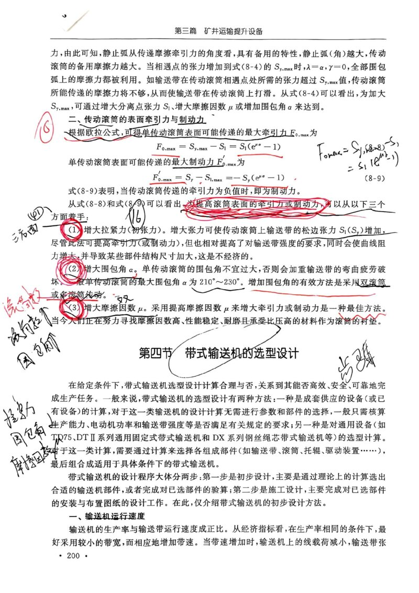
输送带类型：
- 织物层芯 分层织物层芯、整体编织织物层芯
- 钢丝绳芯 强度高、抗弯曲疲劳好、伸长率小
煤矿井下必须使用阻燃输送带
输送带连接方式：
| 方式 | 特点 | 适用范围 |
|---|---|---|
| 机械接头 | 可拆，强度低(25%~60%) | 短运距或移动式 |
| 硫化接头 | 不可拆，强度高(60%~95%) | 固定式 |
| 冷粘连接 | 不需加热，仅适用于织物层芯 | 织物层芯输送带 |
矿用阻燃（整体编织）和钢丝绳芯：[S] = Ss·B / m
分层织物层芯：[S] = σm·B·i / m
Ss—整体纵向拉断强度；B—带宽；m—安全系数(机械接头10~15，硫化接头10)
托辊
托辊类型：
| 类型 | 安装位置 | 作用 |
|---|---|---|
| 承载托辊 | 承载分支 | 支承输送带和物料 |
| 回程托辊 | 空载分支 | 支承回程输送带 |
| 缓冲托辊 | 装载点 | 减轻物料对输送带的冲击 |
| 调心托辊 | 承载和空载分支 | 纠正输送带跑偏 |
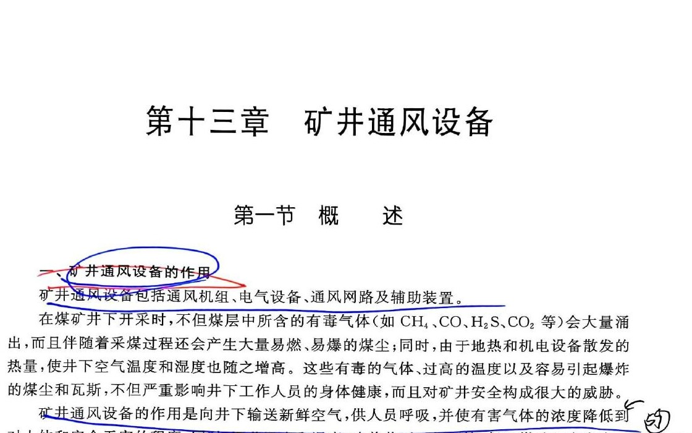
托辊技术指标：
- 成本占输送机总成本的25%~30%，重量占30%~40%
- 主要技术指标：旋转阻力、使用寿命、抗静电
- 堵转的托辊可能导致输送带着火
输送带张力计算
张力计算的两个条件：
- 摩擦传动条件：输送带的张力必须保证工作时输送带在传动滚筒上不打滑
- 垂度条件：输送带的张力必须保证输送带在两托辊间的下垂度不超过规定值
承载分支最小张力：Sa,min ≥ 5(qB + qG)lccosβ
回空分支最小张力：Su,min ≥ 5qBlccosβ
qB—输送带线质量；qG—物料线质量；lc—托辊间距；β—输送倾角
ISO 5048和我国设计规范规定允许最大垂度为2.5%
运行阻力计算
承载分支：W = (qRO + qB + qG)gLcosβ ± (qB + qG)gLsinβ
回空分支：W' = (qRU + qB)gLcosβ ± qBgLsinβ
qRO、qRU—承载、回空分支托辊组线质量；ω、ω'—运行阻力系数
电动机功率计算
FU = (S₂ - S₁) + (0.03~0.05)(S₂ + S₁)
当FU>0时（电动状态）：N = K·FU·v / (1000η) (kW)
当FU<0时（制动状态）：N = |FU|·v' / (1000η) (kW)
K—功率备用系数；v—带速；η—总传动效率
选择题测验
复习思考题
- 带式输送机的基本构成及各部件的结构原理和特点？
- 分析带式输送机的摩擦传动原理，什么是欧拉公式？
- 影响传动滚筒所能传递牵引力的基本因素有哪些？
- 输送带初张力如何确定？
- 带式输送机选型计算的基本步骤？
第十一章 矿井提升设备
矿井提升设备重点掌握提升系统分类、单绳缠绕式和多绳摩擦式提升机的对比、钢丝绳分类、防过卷装置。
矿井提升设备的任务：
沿井筒提升煤炭（或矿石）、矸石，运送材料，升降人员和设备。是矿山大型固定设备之一，是井下生产系统与地面工业广场相连接的枢纽。
基本要求：
- 安全性：不能发生突然事故（涉及人员生命安全）
- 可靠性：能够可靠地连续长期运转
- 经济性：成本和耗电量低
矿井提升系统分类：
| 分类依据 | 类型 |
|---|---|
| 按用途 | 主井提升（煤）、副井提升（矸石/材料/人员） |
| 按容器 | 箕斗提升、罐笼提升、矿车提升、吊桶提升 |
| 按井筒倾角 | 立井提升、斜井提升 |
| 按拖动方式 | 交流拖动、直流拖动、液压传动 |
列车运行理论
列车运行三种状态：
- 牵引状态：牵引电动机产生牵引力，加速启动或匀速运动
- 惯性状态：牵引电动机断电后列车靠惯性运行
- 制动状态：在制动闸瓦或牵引电动机产生的制动力矩作用下减速运行
P - W - Wj = 0
P—牵引力；W—列车运行静阻力；Wj—加速运行时的惯性阻力
列车运行静阻力组成
单绳缠绕式提升机：
工作原理：将提升钢丝绳的一端固定到提升机卷筒上，另一端绕过井架上的天轮与提升容器相连，利用两个卷筒上钢丝绳缠绕方向的不同，当提升机转动时两个提升容器一个上升一个下降。
国产系列：
- JT系列：卷筒直径0.8~1.6m，主要用于井下（矿用绞车）
- JK系列：卷筒直径2~5m，大型矿井提升机，主要用于立井
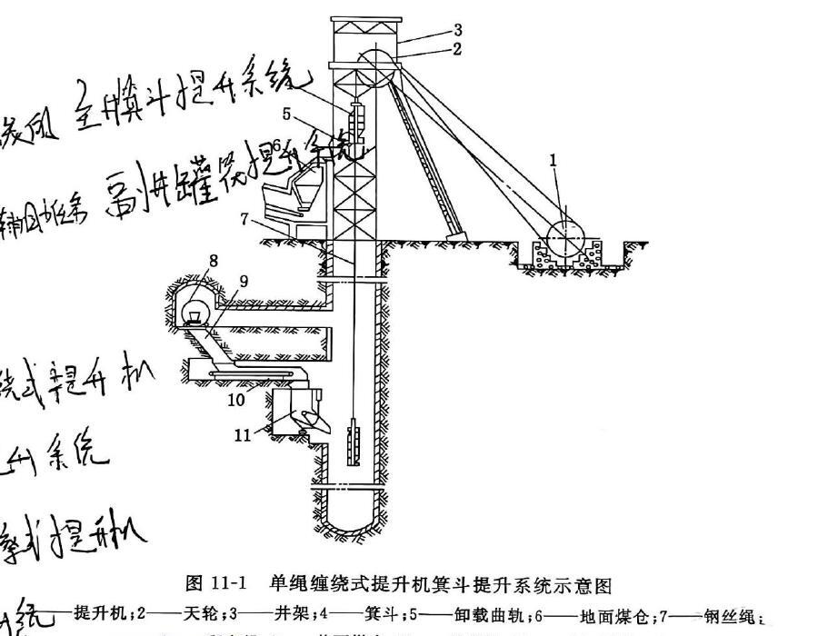
多绳摩擦式提升机（与单绳缠绕式对比）：
| 项目 | 多绳摩擦式优点 |
|---|---|
| 安全性 | 多根钢丝绳共同承受，同时拉断可能性极小 |
| 钢丝绳直径 | 绳径减小→摩擦轮直径显著减小 |
| 转速 | 可使用转速较高的电动机和较小传动比的减速器 |
| 钢丝绳寿命 | 消除容器扭转，减小摩擦，提高寿命 |
| 适用深度 | 绳长不受卷筒宽度限制，适用于深井 |
缺点：更换钢丝绳工作复杂（需同时更换所有钢丝绳）；绳长不能调节，不适应多水平提升
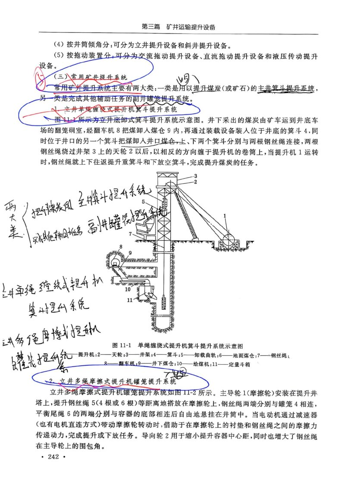
钢丝绳分类：
- 按捻制次数：一次捻绳、二次捻绳（提升用）、三次捻绳
- 按捻向：左捻、右捻；同向捻（柔软、寿命长，用作提升绳）、交互捻（用作斜井串车提升绳）
- 按接触情况：点接触、线接触、面接触
- 按股断面：圆股（最常用）、异形股（三角股、椭圆股）


制动系统
制动器的作用：
- 在提升终了或停机时，闸住提升机（正常停车制动）
- 在提升过程中，控制提升容器的运行速度（工作制动）
- 当发生紧急事故时，迅速闸住提升机（安全制动/紧急制动）
制动器类型：
| 类型 | 特点 | 应用 |
|---|---|---|
| 块式制动器 | 结构简单，制动力矩大 | 矿用提升机广泛使用 |
| 盘式制动器 | 结构紧凑，动作灵敏 | 大型提升机 |
防过卷缓冲装置：
提升容器过卷是提升设备运行的主要事故。防过卷对策：
- 尽量使过卷事故少发生
- 一旦发生，控制事故损失为最小
类型：楔形木轨道（传统）、不拉伸尼龙绳式、摩擦滚筒式、柔性罐座及塑性应变能吸收器
选择题测验
复习思考题
- 矿井提升系统的分类？
- 单绳缠绕式和多绳摩擦式提升机各有何优缺点？
- 钢丝绳的分类方法有哪些？
- 制动器的作用是什么？类型有哪些？
- 防过卷装置的作用和类型？
第四篇 矿山流体机械
第十二章 矿山排水设备
矿山排水设备重点掌握离心式水泵的组成、工作参数、特性曲线、比例定律、轴向推力平衡方法。
一、矿井排水系统
矿井水来源：
- 地表水：季节性雨水、融雪和山洪等
- 地下水：岩层水、煤层水和采空区的水
绝对涌水量Q：矿井在单位时间内的涌水体积（m³/h）
最大涌水量Qmax：涌水高峰时的涌水量
含水系数KB = Q / P
P—同期内煤炭日产量(t)
矿井水性质：
- 密度：一般为1015~1020 kg/m³（比清水大）
- 含悬浮固体颗粒：需在进入水泵前沉淀
- 酸性水：pH<3的强酸性矿井水需采取措施（中和或用耐酸泵）
排水系统组成：
- 滤水器：装在吸水管末端，防止杂物进入泵内
- 底阀：防止灌入泵内的引水及停泵后的存水漏回井中
- 调节闸阀：调节流量，关闭状态下启动水泵以减小启动负荷
- 逆止阀：停泵时自动关闭，切断水流，保护水泵
- 灌水漏斗：启动前向泵内灌水
- 压力表和真空表：检测排水管压力和吸水管真空度
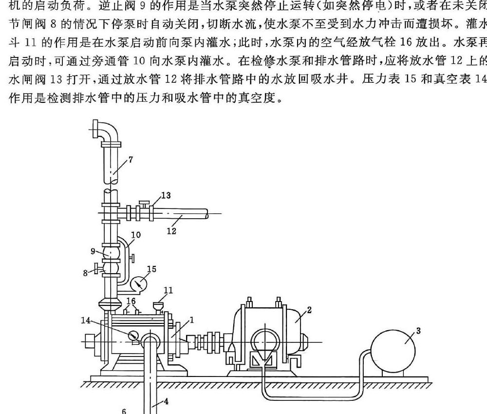
排水系统类型：
| 类型 | 特点 | 适用 |
|---|---|---|
| 集中排水系统 | 全矿涌水集中于水仓，由主排水设备集中排至地面 | 竖井单水平开采 |
| 分段排水系统 | 在井筒中部开拓泵房和水仓，先排至中间水仓再排至地面 | 深井单水平开采 |
二、离心式水泵工作理论
离心式水泵组成：
- 吸入室：将吸水管中的水均匀引向叶轮（圆环形、锥形管）
- 叶轮：使水增加能量的唯一部件（闭式、半开式）
- 导水圈：收集叶轮流出的高速水流，将动能转化为压力能
- 压出室：螺旋形（效率高）、环形（效率低）
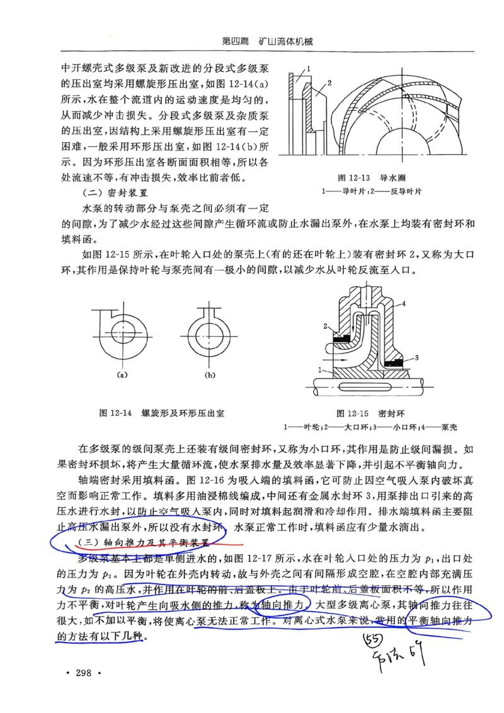
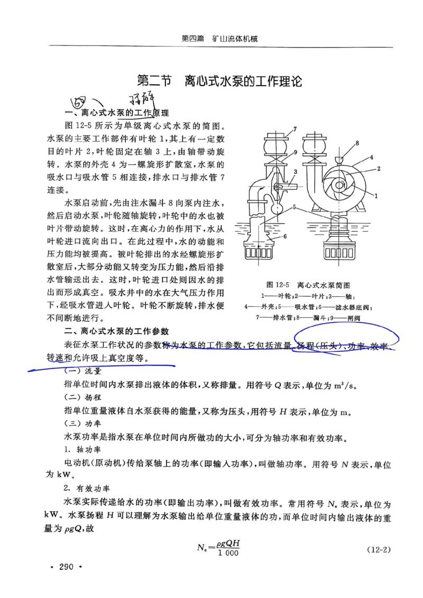
工作过程：
水泵启动前先向泵内注水→叶轮随轴旋转→叶片带动水旋转→离心力作用下水从叶轮进口流向出口→水的动能和压力能均被提高→被排出的水经螺旋形扩散室后大部分动能又转变为压力能→叶轮进口处形成真空→吸水井中的水在大气压力作用下经吸水管进入叶轮→循环
工作参数：
| 参数 | 符号 | 定义 | 单位 |
|---|---|---|---|
| 流量（排量） | Q | 单位时间内水泵排出液体的体积 | m³/s |
| 扬程（压头） | H | 单位重量液体自水泵获得的能量 | m |
| 轴功率 | N | 电动机传给泵轴上的功率（输入功率） | kW |
| 有效功率 | Ne | 水泵实际传递给水的功率（输出功率） | kW |
| 效率 | η | 有效功率与轴功率的比值 | - |
| 转速 | n | 水泵转子每分钟转数 | r/min |
| 允许吸上真空度 | Hs | 水泵在不发生汽蚀时允许吸上真空度的最大限值 | m |
Ne = ρgQH (kW)
ρ—水的密度；g—重力加速度；Q—流量；H—扬程
η = Ne / N
三、速度三角形与基本方程式
水在叶轮内的运动：
水的质点既有以速度w相对于叶轮的相对运动，又有与叶轮圆周速度u相同的牵连运动。
水的绝对速度c = u + w（向量和）
绝对速度c可分解为切向速度cu和径向速度cr的矢量和。
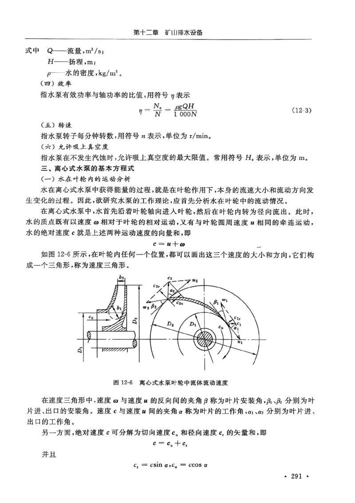
HT = (u₂cu2 - u₁cu1) / g
u₁、u₂—叶轮进出口圆周速度；cu1、cu2—进出口绝对速度的切向分量
密封装置：
- 密封环（大口环）：叶轮入口处，减少水从叶轮反流至入口
- 级间密封环（小口环）：多级泵级间，防止级间漏损
- 填料函：轴端密封，吸入端防止空气吸入，排水端防止高压水漏出
四、轴向推力及其平衡
轴向推力产生原因：
水在叶轮入口处的压力为p₁，出口处的压力为p₂。叶轮在外壳内转动，与外壳之间有间隙形成空腔，空腔内部充满压力为p₂的高压水，作用在旋转的叶轮前、后盖板上。由于叶轮前、后盖板面积不等，所以作用在叶轮上的轴向力不平衡。
轴向推力平衡方法：
| 方法 | 原理 | 适用 |
|---|---|---|
| 开平衡孔 | 后盘开孔使空间与吸水侧相通，压力平衡 | 单级泵 |
| 平衡叶片 | 背面径向筋片加快旋转，离心力增大，压力下降 | 杂质泵 |
| 双吸叶轮 | 结构对称，两边压力作用面积相等 | 流量较大的单级泵 |
| 叶轮对称布置 | 各级叶轮产生的轴向力相互平衡 | 2~4级离心泵 |
| 平衡鼓 | 圆柱体两侧形成压差平衡轴向力（不能完全平衡，需止推轴承） | 多级泵 |
| 平衡盘 | 高压水经轴向间隙→盘室→径向间隙→低压区，自动平衡 | 多级泵（最普遍） |
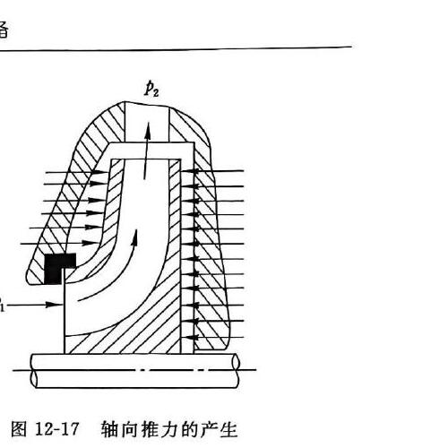
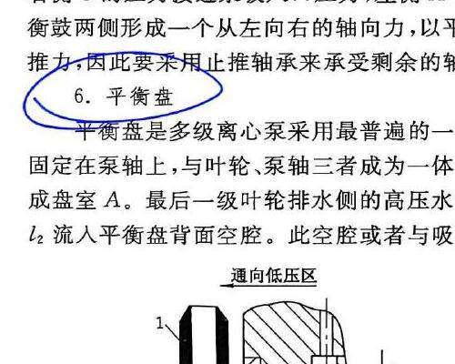
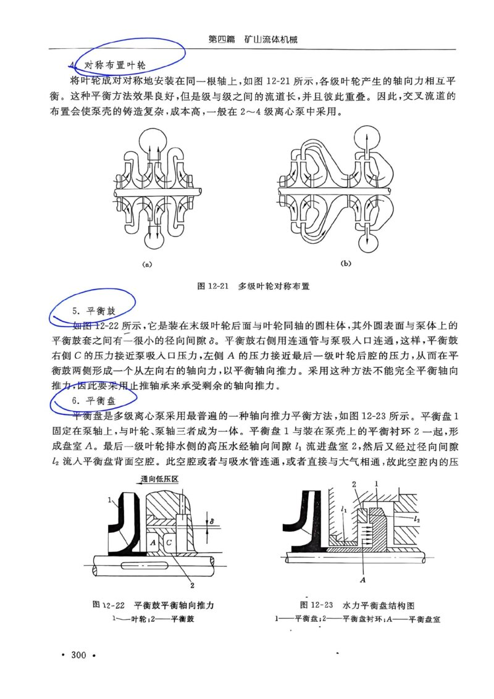
五、特性曲线
HT = A - B·QT
A = u₂²/g；B = (u₂/tanβ₂)/(g·S₂)
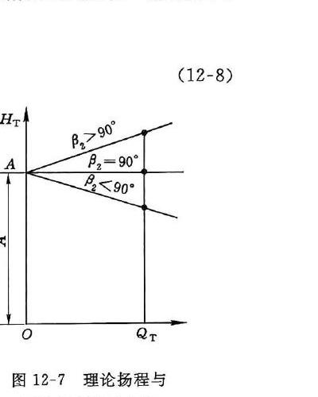
叶片形式对性能的影响：
| 叶片形式 | 理论扬程 | 效率 | 特点 |
|---|---|---|---|
| 前弯叶片(β₂>90°) | 最大 | 最低 | 出口绝对速度最大，流动损失最大 |
| 径向叶片(β₂=90°) | 居中 | 居中 | HT与QT无关 |
| 后弯叶片(β₂<90°) | 最小 | 最高 | 实际应用最广泛 |
实际特性曲线特点（后弯叶片水泵）：
- 扬程曲线H：单调下降，流量为零时扬程最大（初扬程）
- 轴功率曲线N：随流量增大而增大，流量为零时轴功率最小→应在闸阀完全关闭情况下启动
- 效率曲线η：呈驼峰状，最大效率时为额定参数（Qe、He、Ne、ηe）
- 允许吸上真空度Hs：随流量增加而减小（流量越大，抗汽蚀能力越小）
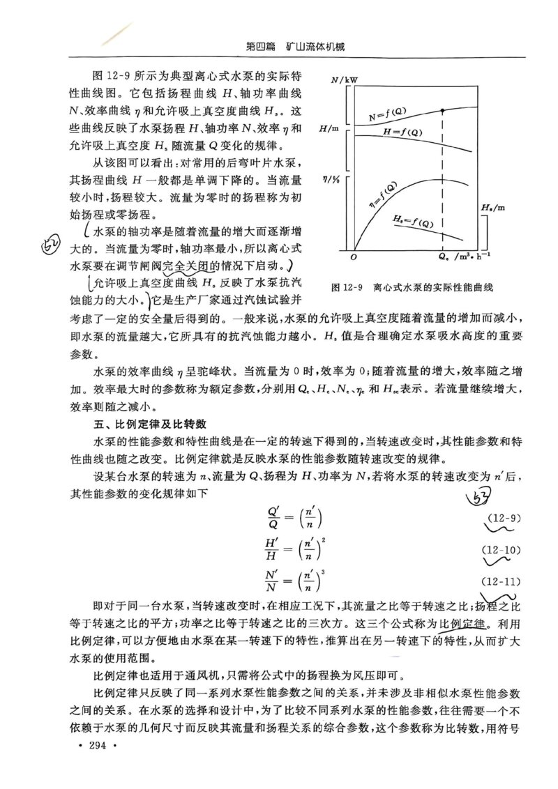
六、比例定律与比转数
Q₁/Q₂ = n₁/n₂
H₁/H₂ = (n₁/n₂)²
N₁/N₂ = (n₁/n₂)³
即：流量之比等于转速之比；扬程之比等于转速之比的平方；功率之比等于转速之比的三次方
比例定律应用：
- 可方便地由水泵在某一转速下的特性，推算出在另一转速下的特性
- 扩大水泵的使用范围
- 同样适用于通风机（将扬程换为风压即可）
比转数：
一个不依赖于水泵几何尺寸而反映其流量和扬程关系的综合参数。
用于比较不同系列水泵的性能参数。
七、水泵调节
调节方法分类：
| 方法 | 原理 | 特点 |
|---|---|---|
| 切削叶轮直径 | 减少流量、扬程、功率 | 切削量需经过计算 |
| 减少叶轮数目 | 扬程与叶轮数近似成正比 | 从排水侧拆影响较小；从吸水侧拆会增加吸水阻力，使水泵过早发生汽蚀 |
| 改变转速 | 按比例定律变化 | 工作点改变 |
| 节流调节 | 改变闸阀开度→改变管路阻力 | 工作简便，但调节时额外消耗功率较大（原则上不推荐） |
| 管路并联 | 增加管路条数→阻力减少→流量增大 | 注意电动机负荷和汽蚀问题 |
节流调节详解：
关小闸阀→管路阻力增加→管道特性曲线变陡→工况点向左移动→流量减小
额外消耗功率：ΔN = γ·Q·ΔH / (1000ηM)
ΔH—调节时在闸阀上额外消耗的扬程；ηM—在M点工作时的水泵效率
特殊情况：当工况点超出工业利用区最大流量而使电动机过载时，可使用该法作为临时调节措施。
管路并联调节注意事项：
- 管路并联后，水泵工况点右移，流量增大，轴功率必然增大
- 如原配电动机功率裕度不大，有可能造成电动机过负荷
- 随着工况点右移，水泵允许吸上真空度将减小，有可能发生汽蚀
- 管路并联的趟数不可太多
选择题测验
复习思考题
- 说明矿山排水设备的组成及应用。
- 矿山排水系统有哪几种基本形式？应如何选择？
- 离心式水泵的工作参数有哪些？各参数的意义是什么？
- 水在叶轮中流动，其绝对速度、相对速度和圆周速度之间的关系如何？
- 管路特性曲线与水泵性能曲线在定义上有何区别？为何它们的交点是工作点？
- 简述离心式水泵串联、并联工作的特点。
- 在什么情况下需进行泵的调节？其调节方法有哪几种？
- 离心式水泵主要由哪几部分组成？D型和B型离心式水泵在结构和应用上有何特点？
- 离心式水泵的轴向推力是如何产生的？说明其平衡方法和原理。
- 比例定律的内容是什么？如何应用？
- 为什么离心式水泵要在闸阀完全关闭情况下启动？